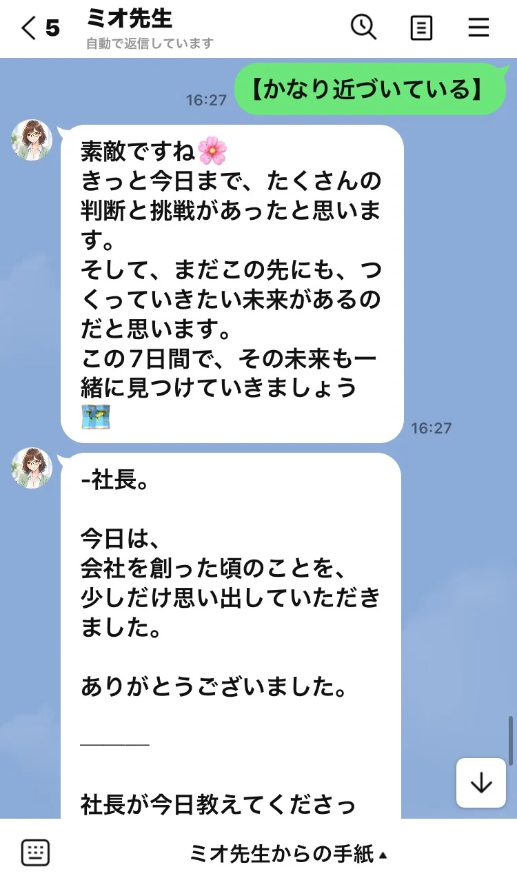

01Why
福利厚生サービスを
増やすだけで、
社員は、
この会社で未来を
描けるでしょうか。
そのサービスは、社員の
「将来への不安」に届いていますか。
離職を減らしたい。採用力を高めたい。
そのために、福利厚生を充実させる。
では、そのサービスは、
社員一人ひとりの「将来への不安」に、
どこまで応えられているでしょうか。
これからのお金、住まい、健康、家族、
そして老後。情報は溢れているのに、
何が正しく、自分には何が必要なのか
分からない。
調べても決められず、
気になりながら先送りしてしまう。
必要なのは、人生100年時代を
幸せに生きるための「判断軸」です。
どれほど立派でも、
使われなければ、
人生は支えられない。
「学べます」「相談できます」と
用意しただけで、
自然に使ってもらえるとは限りません。
どれほど立派な理念や
充実した機能を並べても、
使われなければ、
社員の人生を支えることはできない。
だから私たちは、
一人ひとりが自分の人生に関心を持ち、
自分から学び、相談したくなるまでの
体験を大切にしています。
REALIZECLUBが届けるもの
学びが、自分で選ぶ力になる。
その力が、未来への一歩になる。
判断軸を育てる人生教育を届け、
人生設計と実行まで支える仕組みです。
どんな人生を、
送りたかったですか。
誰と、どんな未来を
生きていきたいですか。
02Life Journey
自分の人生に、
興味を持つ旅。
その旅は、
あなたの原点から始まる。
知識を学ぶ前に、まず、
自分の人生に心が動くこと。
気づきと共感が次の一歩に
つながるよう、
ストーリーを設計しています。
-
01Remember
原点に立ち返る
忙しい毎日の中で
置き去りにしていた夢や、
大切な人への想いを、
もう一度見つめ直す。
自分の心が動く問いが、
旅の入口です。 -
02Discover
自分と時代を知る
自分の価値観や
大切にしたいことを知り、
今を生きる時代を知る。
「自分はどうだろう」と、
人生を自分のこととして
考え始めます。 -
03Notice
未来と未設計に気づく
このまま進んだ先の
未来を考え、
まだ備えられていない
「未設計」に気づく。
漠然としていた不安を、
考えるべきことに
変えていきます。 -
04Learn
学び、判断軸を育てる
自分に必要な知識を学び、
何を大切にし、何を選び、
どう備えるかを考える。
情報に迷い続ける日々から、
自分で判断できる日々へ。 -
05Design
自分だけの人生を描く
判断軸を得てから、
自分だけの人生設計を描く。
一般的な正解を探すだけでは
見えなかった、望む未来と
必要な準備を具体的にします。 -
06Share & Act
家族と共有し、実行する
人生設計書を家族と共有し、
大切にしたい未来を話し合う。
専門家に相談し、
納得できる選択をして、
具体的な行動へ
移していきます。 -
この旅の全てに、
人生支援AI「ミオ先生」が
伴走します。
03Mio
あなたの人生に、伴走するAI
ふと気になった、
その時に。
「ミオ先生に
話してみよう。」
人生支援AI「ミオ先生」は、
迷いや気持ちの整理、
学びの振り返り、
人生設計の見直しを支え、
次の一歩を一緒に考えます。
そして、日常の中で
頼れる存在になるよう、
私たちは継続して
接点をつくります。
日常で使うLINEを入口に、
定期的に届く問いやメッセージ。
一人ひとりの関心や、
本人が話してくれた悩み、
人生の節目に寄り添いながら、
自分の未来を考える
きっかけを届けます。
その人に必要なことを、
その人を想う言葉で。

想いを言葉にすることが、最初の一歩。
※ 発信・対話のイメージです。
- 01「そういえば、
これが気になっていた」 - 02「少しミオ先生に、
話してみよう」 - 03「今日は、
家族にも聞いてみよう」
そんな小さな行動を重ねながら、
人生を考えること、学ぶこと、
相談することが、
少しずつ生活に溶け込んでいく。
一通の言葉にも、想いを込めて
社員一人ひとりの
幸せを、
心から願う。
発信のために発信するのではなく、
その人が自分と大切な人の
未来に向けて、
一歩踏み出せるように届ける。
その想いを、ストーリーにも、
一通のメッセージにも、
相談を支える仕組みにも
込めています。
将来への安心を支えるのは、
「自分は何を大切にし、
何を選び、どう備えるか」が
見えていること。
そして、迷ったときに
相談できる相手がいることです。
04Future
「この会社は、
自分と家族の未来まで
大切にしてくれる」
会社が、社員と家族へ
人生支援の機会を届ける。
その実感を、会社への信頼へ
育てていく。
ここで、働き続けたい。
ここで、働きたい。
人生支援を、選ばれる理由へ。
REALIZECLUBは、
社員の未来を支える
会社づくりを目指します。
REALIZECLUB
今、この時代に必要な
人生支援を、
毎日の暮らしの中へ。
理念を掲げるだけで終わらせず、
関心が生まれ、学びが始まり、
相談と行動につながるところまで
設計する。
社員が自分の未来に関心を持ち、
希望を描き、動き出せる。
それが、REALIZECLUBの
人生支援です。